ΕΚΘΕΣΗ: ΛΑΟΓΡΑΦΙΚΟ ΜΟΥΣΕΙΟ ΔΡΥΜΩΝΑ
Το διοικητικό συμβούλιο του λαογραφικού μουσείου Δρυμώνα πραγματοποίησε έκθεση με ΘΕΜΑ : "Εθνική Παλιγγενεσία και οι Ελληνίδες στ' άρματα" με σκοπό να τιμήσουν τον συγχωριανό τους λαϊκό ζωγράφο Νώντα Ρεντζή. Την έκθεση προλόγισε ο δήμαρχος Θέρμου Σπύρος Κωνσταντάρας και εκ μέρους του μουσείου η εκπαιδευτικός Βούλα Μπουγά. Χαιρετισμό απηύθυνε ο Πρόεδρος της κοινότητας Δρυμώνα κ. Λάμπρος Καρβέλας.
Ο ζωγράφος ευχαρίστησε τους συντελεστές της έκθεσης με αυτά τα λόγια : «Σας ευχαριστώ όλους μέσα από τα βάθη της καρδίας μου για την ιδιαίτερη αυτή τιμή. Λαμβανομένου δε υπόψη πως : "Κανένας δεν άγιασε στον τόπο του" ή "Να ψοφήσει η γίδα του γείτονα" και σαν Μπερικιώτες που είμαστε "γαϊδούρια" η τιμή αυτή είναι τεράστια και επιστρέφει πολλαπλάσια σε εσάς που παρά της δυσκολίες σκεφτήκατε να τιμήσετε τον πατριώτη σας... Σας ευχαριστώ!!»
Ομιλία κ. Βούλας Μπουγά:
Αξιότιμοι προσκεκλημένοι, κυρίες και κύριοι, σας ευχαριστούμε που μας τιμήσατε με την παρουσία σας, στην λιτή, αλλά γεμάτη συναίσθημα χαράς και υπερηφάνειας, γιορτή, αφιερωμένη στο Λαϊκό μας ζωγράφο Νώντα Ρεντζή, βγαλμένο από τα σπλάχνα του Δρυμώνα!
Αγαπημένε, Νώντα! Επίτρεψέ μου την προσφώνηση, σαν ΠΑΛΙΟΙ, που είμαστε, σχεδόν συνομήλικοι που ζήσαμε τις ίδιες όμορφες και δύσκολες καταστάσεις της παιδικής μας ζωής! Αλλά και, φίλε μου, κατ' επέκταση της βαθειάς σας φιλίας με τον Τάσο! Θα 'θελα εδώ, να ευχαριστήσω τον Ανδρέα Παπακωστόπουλο, που μου έκανε την τιμή να πω λίγα λόγια για τον άνθρωπο "Νώντα Ρεντζή", έτσι, όπως τον γνώρισα εγώ και να ευχηθούμε όλοι μας, να ξεπεράσει η οικογένειά του, τις δύσκολες ώρες που περνάει και γρήγορα να είναι μαζί μας!
Γεννήθηκες στο όμορφο χωριό μας, το Μπερίκο, το 1939, από μια οικογένεια έντιμη και αξιοσέβαστη! Ο Μπάρμπα-Νώντας, ο παππούς σου, με το παραδοσιακό σκουφάκι. Σοβαρός θυμόσοφος, αλλά κι ένα πηγαίο χιούμορ, που δεν ξεχνιέται! Η Θεία -Νώνταινα, η γιαγιά σου, παραδοσιακή σύζυγος, μάνα και νοικοκυρά, ευλογημένη με την ικανότητα της εμπειρικής ΜΑΜΗΣ. Μεγάλη η προσφορά της εκείνα τα χρόνια τα δύσκολα! Απέκτησαν μεγάλη οικογένεια με αξιόλογα παιδιά. 4 γιους και μία κόρη.
Ο πατέρας σου, ο Θανασούλας, με το τραγιασκάκι του και πάντα γελαστός! Μεγάλο πειραχτήρι, δεινός κυνηγός, καλός μαραγκός και άριστος οικογενειάρχης! Η μανούλα σου. Καταγόταν από τον Μαχαλά. Μια όμορφη γλυκιά γυναίκα, με τροφαντό παρουσιαστικό. Την θυμάμαι που περνούσε μπροστά στο σπίτι, καβάλα στο άλογο, περήφανη αμαζόνα! Πάντα χαρούμενη και καλόβολη! Πήρες πολλά απ' τους γονείς σου! Κι ο πατέρας σου ασχολήθηκε με την τέχνη, αφού ήταν μαραγκός. Εκείνος ζωγράφιζε στο τεζάκι του με το πριόνι του, σφυρί, το τρυπάνι, το κοπίδι, το κατσαβίδι, την πλάνη κ.λ.π. και το μεράκι! Εσύ με το καβαλέτο, το μουσαμά, την παλέτα με τα χρώματα, τα πινέλα και... το μεράκι! Τι λες δε μοιάζετε;
Η αγάπη σας για το κυνήγι, μοναδική! Αλλά και το χιούμορ και τα πειράγματα, "κατά Τάτα"! Γεννήθηκες σε καιρούς δύσκολους! Έβγαλες το Δημοτικό Σχολείο στο χωριό! Αλλά είχες την καλή τύχη να φύγεις παραπέρα, όπως λέγαμε. Σε πήραν οι μπαρμπάδες σου στο Μεσολόγγι. Σε αγκάλιασαν, σε φρόντισαν κι εκεί τελείωσες το Γυμνάσιο, μαζί με διάφορες άλλες ευκαιρίες και εφόδια! Μετά το Γυμνάσιο, επιμελής μαθητής ων, έδωσες εξετάσεις και πέρασες στην Οδοντιατρική Σχολή Αθηνών. Όλα πήραν το δρόμο τους. Οι γονείς σου, οι δικοί σου άνθρωποι και το χωριό ολόκληρο σε καμάρωνε! Το μπουκέτο των επιστημόνων απ' το χωριό μας μεγάλωνε, πλούτιζε, σε όλα τα επίπεδα! Και καμαρώναμε!
Το Στρατιωτικό αναπόφευκτο. Και γύρισες οδοντίατρος πια! Τα καλοκαίρια εξασκούσες το επάγγελμα και στο χωριό μας. Απ' τους πρώτους σου ασθενείς, ήταν η μανούλα μου κι εγώ. Η μανούλα μου για εξαγωγές κι εγώ για σφραγίσματα. Δε θυμάμαι αν πονούσα. Εκείνο που θυμάμαι είναι, ότι αστειευόσουν συνέχεια κι όλη η διαδικασία κυλούσε ευχάριστα!
Εγκαταστάθηκες στην Ηλιούπολη Αττικής. Άνοιξες το ιατρείο σου και άσκησες το επάγγελμά σου, μέχρι τη σύνταξη! Παντρεύτηκες την αγαπημένη σου Νίτσα και δημιουργήσατε μια πολύ όμορφη οικογένεια με τη Γιώτα, τη Ρία και το Θανάση. Τρία υπέροχα παιδιά! Ερχόσασταν στο χωριό και σας χαιρόμασταν! Τα καθοδηγήσατε σωστά και πήραν κι αυτά το δρόμο τους με τις σπουδές τους και την δική τους ζωή! Η Γιώτα μάλιστα ακολούθησε τα βήματά σου στη Ναύπακτο. Τους εύχομαι, από καρδιάς, υγεία, αγάπη και δημιουργικότητα!
Στο χωριό ερχόσουν και έρχεσαι συχνά. Είσαι πάντα ο άνθρωπος με το χαμόγελο, τον καλό του λόγο και το πηγαίο χιούμορ σου! Είσαι και μεγάλο πειραχτήρι σαν τον πατέρα σου! Στο μυαλό μου, έρχεται πάντα μία εικόνα: Ένα μεγάλο τραπέζι στην πλατεία με 10-15 άτομα, περίπου συνομήλικοι, φίλοι απ' τα παλιά να συζητούν, πίνοντας ουζάκι ή τσιπουράκι, με μεζέ ντομάτα, αγγούρι, τυράκι, ελιές, στραγάλια, κορόμηλα και αργότερα, πατάτες τηγανιτές, σουβλάκια λουκάνικα κλπ. Οι τόνοι ανέβαιναν με τις πάσης φύσεως περιεχομένου συζητήσεις. Παράδοσης, ιστορικά, εκπαιδευτικά, ιατρικά, τρέχοντα γεγονότα, με συμφωνίες, με διαφωνίες, με κόντρες, με ανέκδοτα, αλλά πάντα αξιοπρεπώς. Κι ανέβαιναν οι τόνοι, όταν από κάπου φαινόταν ο Μπάρμπα -Τάσος, ο Ακρίδας! Όμορφα χρόνια, ανεπανάληπτα!
Και συ, ανάμεσα σ' ολ' αυτά, όντας ανήσυχο πνεύμα, αναμείχτηκες και στην Πολιτική. Για κάποια χρόνια, ήσουν ενεργό μέλος και προσέφερες απ' το μετερίζι σου. Έμαθα ότι αναμείχθηκες και στην Αυτοδιοίκηση. Και πέρασαν τα χρόνια κι ήρθε η Σύνταξη! Δεν ξέρω για πόσον καιρό, για πόσα χρόνια, έβραζε μέσα σου το καζάνι με το πάθος της Ζωγραφικής! Και ξαφνικά, ξεφύτρωσε ο καλλιτέχνης, ο λαϊκός ζωγράφος Νώντας Ρεντζής, με οδηγό την απλοϊκότητα, την παράδοση! Δεν σε σταματάει τίποτα. Προχωράς, δημιουργείς, ανεβαίνεις!
Θα βρούμε σε σένα, πορτρέτα, κτίσματα, την καθημερινότητα της νοικοκυράς, αγροτικές δουλειές, επαγγέλματα, βουνά, λαγκάδια, τοπία, πανίδα και χλωρίδα του τόπου μας και δεν ξέρω πού θα σταματήσεις....... Επίσης, ήθη και έθιμα, γλέντια, γάμους, πανηγύρια, θρησκευτικές τελετές! Έβγαλες με το ταλέντο σου και το πάθος σου, την ψυχή σου! Και συνεχίζεις με την Εθν. Παλιγγενεσία στην οποία είναι αφιερωμένη και η σημερινή έκθεση και όλα τα τεκταινόμενα, ξεκινώντας από την Ορκωμοσία των Φιλικών και συνεχίζοντας με τους αγώνες και τα κατορθώματα των ηρώων, τους κατά τόπους αγωνιστές γνωστούς και αγνώστους. Τι να πρωτοειπώ. Ανεξάντλητος! Και συνεχίζεις με την ιστορία!
Έργα σου, βρίσκονται σε ιδιωτικές συλλογές, αλλά και σε δημόσιες πινακοθήκες και Μουσεία και στην Ελλάδα, αλλά και στο εξωτερικό. Βραβεύτηκες και από την UNESCO, για την προσφορά σου στην τέχνη. Τίμησες το χωριό μας με την Πρώτη σου έκθεση τον Αύγουστο του 2009, με θέμα: ''Μνήμες -Συναισθήματα -Χρώματα''. Ο τίτλος τα λέει όλα. Το τιμάς και σήμερα! Ακολούθησαν: Στη Ναύπακτο, στο Θέρμο, στην Ηλιούπολη, στο Κολωνάκι, στον Άλιμο, στο Περιστέρι, στον Πειραιά και στο Καλλιάνι της Αρκαδίας και άλλες.
Δέξου και αυτή τη σεμνή τελετή, με αυτά τα λιτά λόγια, με όλη μου την εκτίμηση, τον σεβασμό, το θαυμασμό και την αγάπη μου! Εσύ απ' ό,τι φαίνεται δεν έχεις τελειωμό. Δουλεύεις, δημιουργείς, προσφέρεις, διδάσκεις. Νά 'σαι καλά, για να μας δώσεις κι άλλα πολλά...
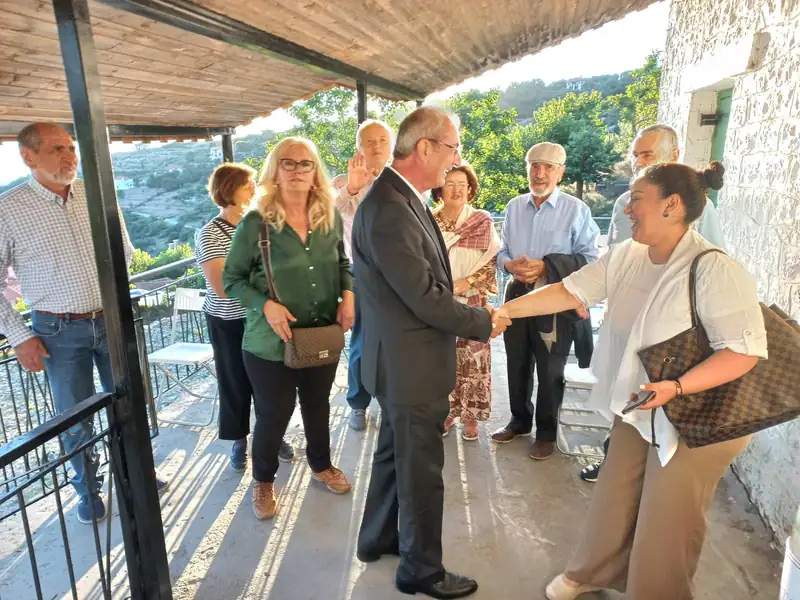
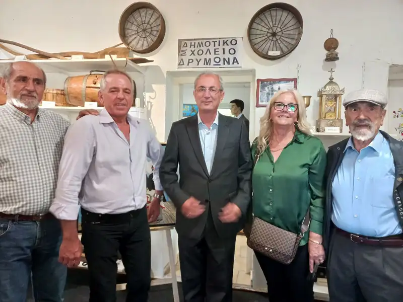
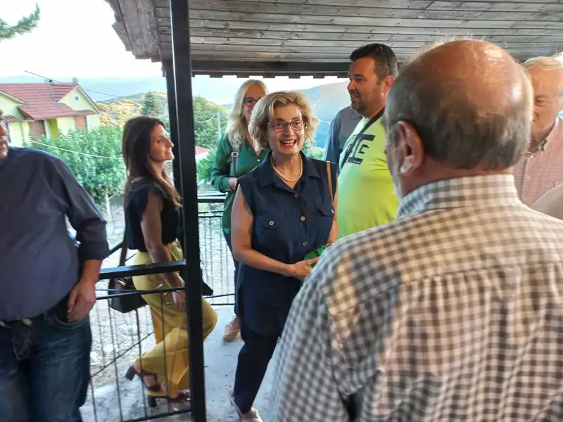
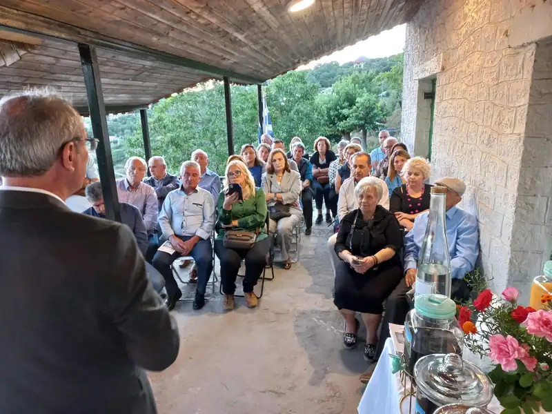
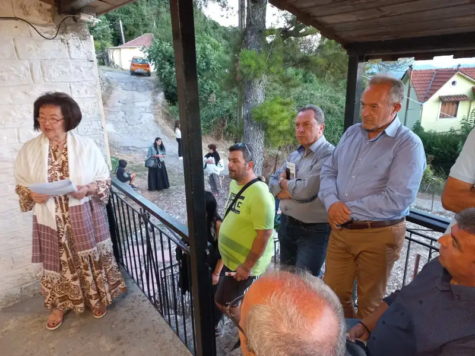
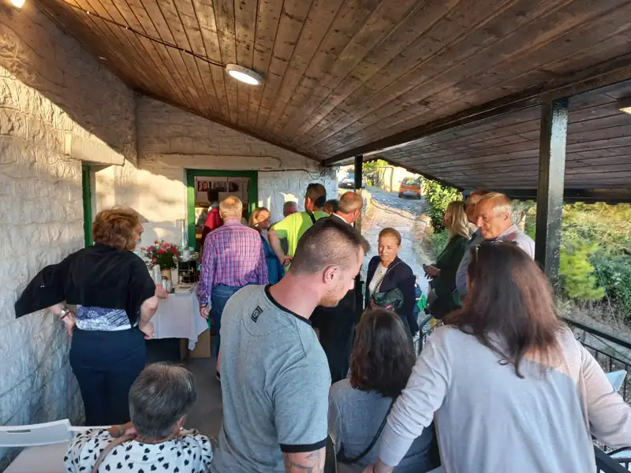
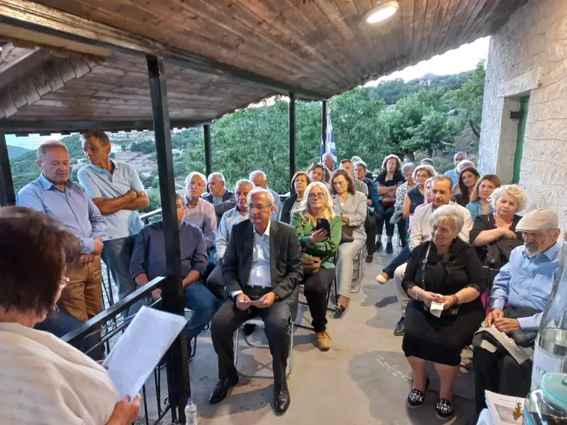
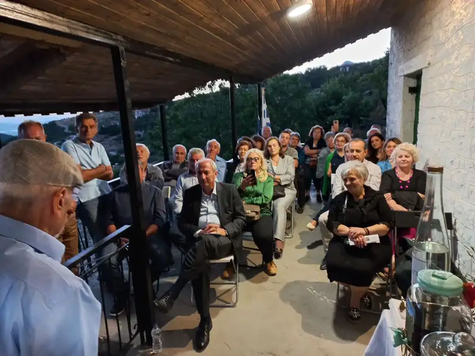
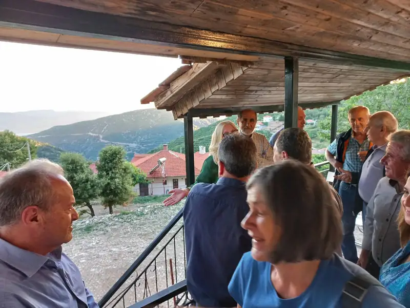
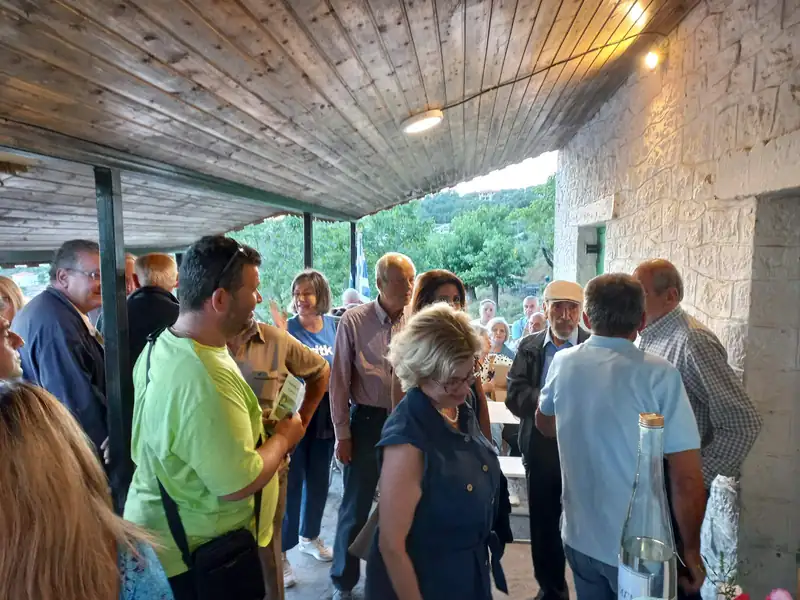
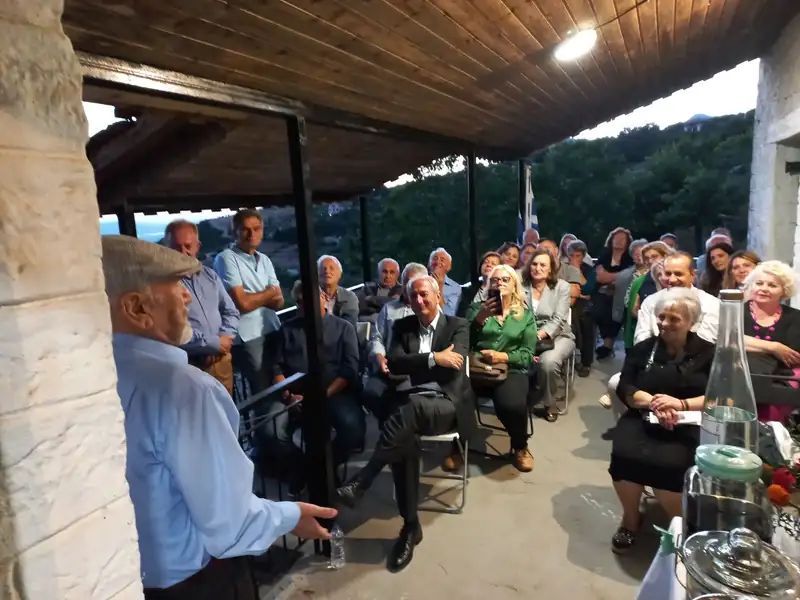